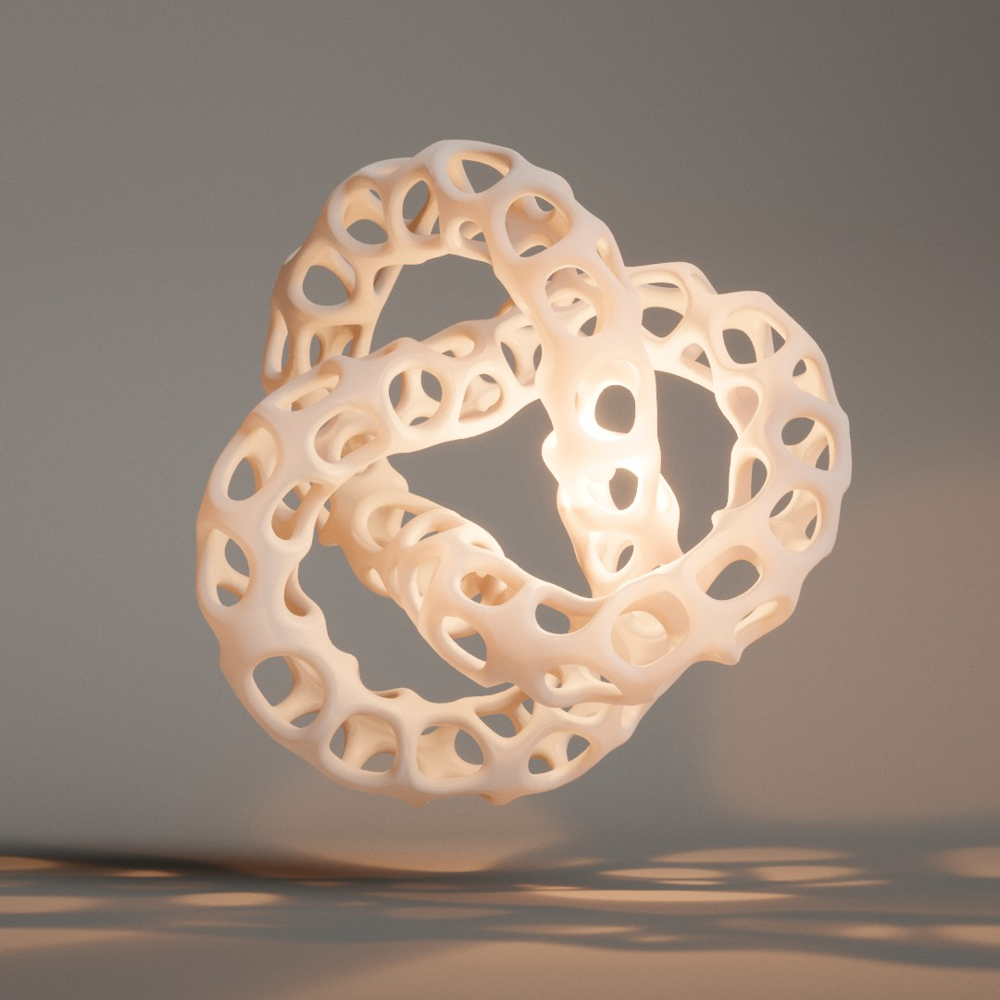

How Hollow hollows
A solid floats in a studio as a smooth skin. Dimples appear on it, break through, and widen into a lattice of rounded Voronoi struts, while a warm light inside glows through the walls and throws the holes across the floor. Here is how the lattice is cut, how it opens, and how the light finds its way out.

A mesh, not a field
The first versions of this day carved the holes out of a 3D distance field and meshed the result. It looked blobby: a field fine enough for crisp struts was too slow to re-mesh while the holes grow. So everything here is done on the surface instead, the way MeshLab perforates a mesh. The 3D field is only used once, to make that surface.
Each shape (a thick trefoil, Suzanne, a sphere, an egg, a torus, a rounded cube, the Platonic solids, a capsule or a blend of two) is a signed distance function. Surface nets mesh it, sampling finely only next to the surface. Then the vertices are relaxed along the surface and pulled back onto it with Newton steps, so the triangles are even and every vertex is an exact sample. Normals come from the field's gradient.
The mesh is turned to its principal axes and scaled to a common reach, so every shape fills the same view. Suzanne is the exception: her axes are nearly tied, so she keeps a fixed upright frame and faces the camera.
tools/suzanne-sdf.mjs), with the ears and brow thickened so they survive hollowing.Holes from the distance to a cell's border
Cell sites are Poisson-disc samples over the mesh. Their spacing comes from Cells and varies with a noise (Variation). Each vertex belongs to its nearest site, and stores b, its distance to the cell's border: half the gap between its distance to its own site and to a neighbouring one. That is Worley's F2 − F1. It is the same from either side of a border, so a strut is continuous across it.
The gaps to all the neighbours are blended with a soft minimum (log-sum-exp) as wide as Roundness. At 0 the holes are the cells' polygons, shrunk. As it grows, their corners round off, their sides bow out, and the struts thicken towards the joints, which read as webs.
A hole is wherever b is greater than the strut's half-width w. The figure below runs the same rules on a flat patch. Drag Erosion or press Play to watch it open.
A patch of skin, hollowing
Shaded from the wall's thickness, with the lip profile of the next section and a full Fillet. The erosion drifts from the top left, the way the sculpture's starts on the side facing the camera, and each cell has a random delay on top. Cells too small for a clean hole stay closed, as they do on the sculpture.
Rounded struts from a quarter circle
The skin is thickened either side of the surface, and the thickness follows a quarter round across the lip. With r the lip radius (Fillet × the strut's half-width), each vertex gets s = (w − b) / r: 0 at the rim, 1 where the lip meets the face. The wall's half-thickness is t · sin θ, where s = 1 − cos θ.
So with a full Fillet and a wall as thick as the strut is wide, a strut is a round tube. With less Fillet it becomes a band with rounded edges. The triangles are cut along isolines of s at even steps of θ, marching triangles in bands, so the lip's curve is sampled finely whatever the mesh. Normals are analytic: the face normal, tilted by the profile's slope along the gradient of b.
One strut in cross-section
Thickness is relative to the strut's half-width. The wall is also never thicker than there is room for where another part of the surface passes close, or than the surface's radius of curvature, so it tapers instead of folding through itself. Puff crowns the struts a little along their middle.
Every cell on its own clock
The erosion E runs from 0 to 1 over Hollow time, and each cell has a delay. While a cell is closed, w sits a lip radius past its largest b, so its wall is whole. Then w comes down to that largest b: the wall thins in the middle of the cell to a dimple from both faces. It breaks through, and the hole widens to its final strut on an ease-out curve. A shallow dimple runs ahead of the main one, so the erosion shows from the start.
Workers (two on desktop) re-cut the surface at E steps a few hundredths apart. One cut is 2D work on the surface, 30 to 120 ms. Each cut also carries every vertex's velocity with erosion, so the vertex shader moves the surface on between cuts and the holes grow smoothly instead of in jumps. When meshing is slow, the clock slows down rather than outrunning the newest mesh.
Light through the walls
The light inside renders a cube map of the sculpture from where it is, in the sculpture's own frame. It doesn't store depth but the length of wall along every ray. Faces the ray enters subtract their distance, faces it leaves add theirs, all under additive blending, so the sum is the total thickness crossed.
Every surface the light reaches reads that thickness and turns it into a transmittance, exp(−σ · thickness), per colour channel. Glossy glaze stops the most, wax the least, and red gets through further than blue, so thin walls glow warm. The cube is mip-mapped and sampled over a cone as wide as the light's penumbra at that distance, so the hole patterns on the floor sharpen close to the sculpture and blur further away.
Drag the light in the figure. It is a slice through a hollowed shell.
Rays from the light, dimmed by the wall they cross
Each ray's brightness is exp(−σ · L), with L the wall length it crosses. The live page does this per channel with σ scaled for red, green and blue, and turns the cube with the sculpture, so tumbling never redraws it. It is drawn again only when the light moves relative to the sculpture, or when a new mesh lands.
Through the holes, not through the walls
With Light on pointer, the light goes to the mouse. Going in a straight line would push it through the walls. Once the lattice is open, the worker that cut the last mesh also sends a clearance grid: the distance from every node to the nearest wall, 0.015 apart (0.022 on phones) on a sculpture about 2 across.
The light walks to its target by A* over that grid. Steps closer to a wall than Light distance cost more, so it keeps its distance where it can, but can still squeeze through a narrower hole. The way is planned again about five times a second as the target moves, and the light follows it at a fixed speed. If the target can't be reached, it stops at the nearest point it can reach.
Move the pointer: the light finds a way out
The same weighted A* as the page: 8 neighbours here (26 in 3D), each step costing its length × (1 + 1.5 · max(0, keep − D) / keep), with the heuristic counted twice for speed. The page caps a search at 6000 nodes, which it rarely reaches; one plan takes about 0.2 ms.
A sketch while the settings move
A new sculpture takes a second or two to prepare, which is too slow to follow a slider. So while the Shape and Hollowing settings change, a third worker sketches the result. A coarse mesh of the shape (cached per shape) is celled with the mesher's rules, simplified, and the rims of the holes it will open are traced as glowing outlines. The outlines are drawn on the sculpture's own skin when only the cells change, or on the coarse mesh of a new shape.
The outlines are screen-space quads of a fixed width in pixels with a soft additive halo, offset to the outer face of the wall. The sculpture is built and hollowed 1.2 s after the last change.
A new shape shrinks the old one away. The backdrop then fades to the new palette, the new material goes on, and the new shape grows in with a little overshoot. The light, the view and the tumble carry on across the swap. In kiosk mode this happens by itself every 20 seconds once the sculpture has finished hollowing.
Where the time goes
The meshing runs in workers, so it never blocks a frame. On the main thread, a frame is mostly the shared pipeline. Measured headlessly with seed 7: desktop at the high tier, and a phone tier (iPhone user agent, pixel ratio 2, medium).
| Step | Desktop | Phone tier |
|---|---|---|
| Pipeline, CPU per frame | 1.7 ms | 1.9 ms |
| Glow cube, CPU per redraw | 0.41 ms | 0.14 ms |
| Light way (A*), per plan | 0.23 ms | 0.18 ms |
| One cut of the surface (worker) | 64–123 ms | 27–66 ms |
| New shape, until it hollows | 0.9–2.0 s | 0.4–1.3 s |
| Sketch of a Cells change | 0.58 s | 0.33 s |
| JS heap | 79 MB | 42 MB |
The phone tier cuts faster because its mesh is coarser. Its glow cube is 256² rather than 512², and is only redrawn when a new mesh lands or the light moves.
Controls
- Drag to orbit, scroll or pinch to zoom. With Light on pointer, the light follows the mouse (or the last tap).
- Shape: the solid and its own sliders. A change sketches, then builds and hollows.
- Hollowing: Cells, Variation, Roundness, and Hollow time.
- Look: Strut, Fillet, Thickness, Puff, palette, Translucency, finish and Tumble. These change the sculpture in place.
- Light: Glow, Brightness, Warmth, pointer or fixed, Light distance, Daylight and Flicker.
- H hollows it again, L switches the glow, R randomises.
- Space pauses, Tab hides the panel, F goes fullscreen, P saves a screenshot.